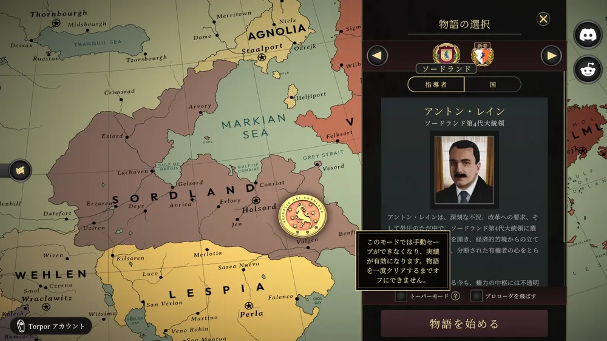
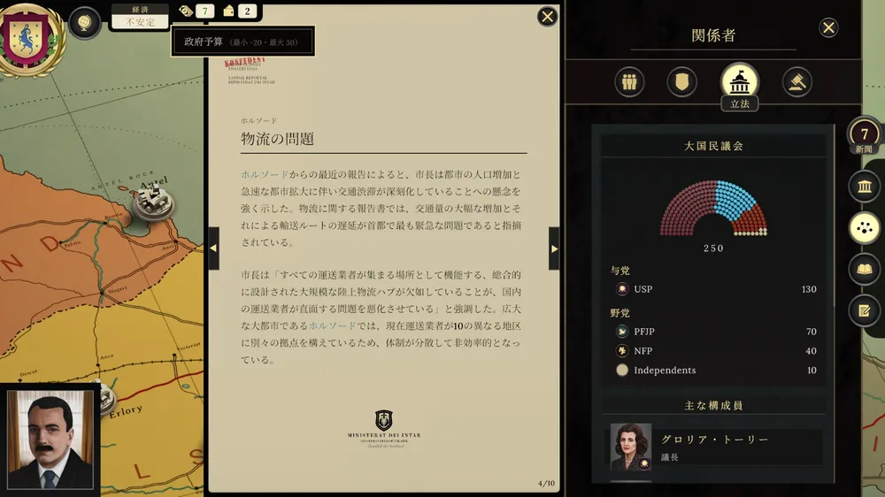
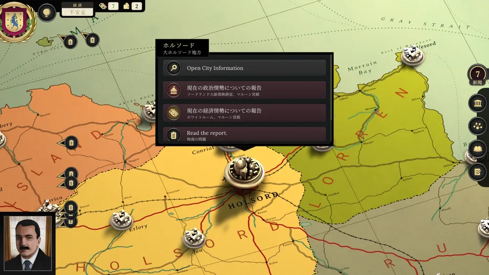
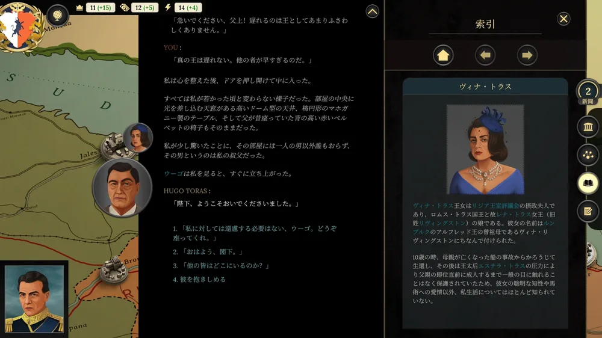
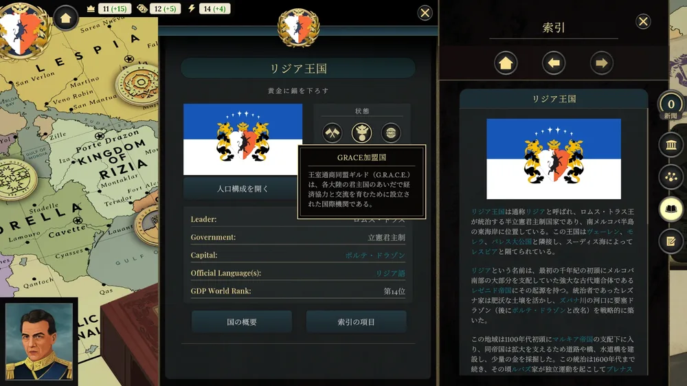
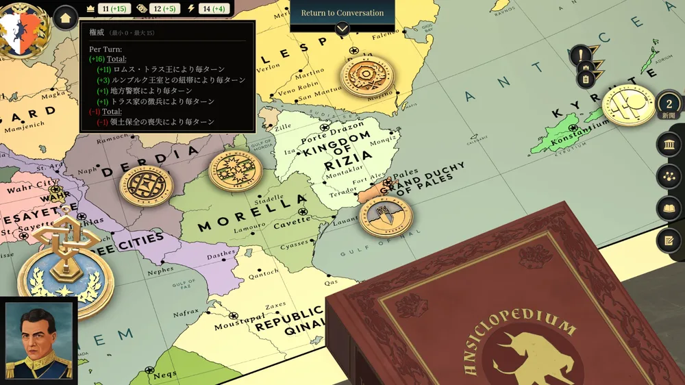

Suzerain 日本語化パッチ
政治シミュレーションゲーム『Suzerain』（スゼレイン）を日本語で遊ぶための、有志による非公式の日本語化です。
プレイ画面
日本語化を入れたゲームの実際の画面です。画像を押すと原寸で開きます。






日本語になるところ
- 会話・語り（本編『Sordland』と DLC『Kingdom of Rizia』）
- 報告書・新聞・日誌・法案や政策の説明
- 索引（ゲーム内の Codex）。本文の青い語から項目が開きます
- 起動画面・メインメニュー・ゲーム中のメニュー
フォントの追加や DLL の導入はしていません。ゲームのファイルを日本語版に置き換えるだけです。
動作環境
- Windows の Steam 版『Suzerain』 3.1.0 (Windows) Build: 175（ゲーム内の版の表記）。版が違うときは入れないでください
- 追加のソフトは不要です。プログラムやスクリプトは実行しません（ファイルを上書きするだけなので、スマートアプリコントロールにも止められません）
入れ方
- Suzerain を終了します。
- 上のボタンから最新版の ZIP をダウンロードし、右クリック →「すべて展開」で展開します。
- Steam の「ライブラリ」で Suzerain を右クリック →「管理」→「ローカルファイルを閲覧」を選びます。ゲームのフォルダ（
Suzerain_DataやSuzerain.exeがあるフォルダ）が開きます。 - 展開したフォルダの中の
Suzerain_Dataフォルダを、ゲームのフォルダへドラッグします。 - 「ファイルの置換またはスキップ」と出たら「宛先のファイルを置き換える」を選びます（7ファイル）。「管理者の権限が必要です」と出たら「続行」を押します。
- ゲームを起動し、メインメニューが日本語（「物語を始める」など）になっていれば完了です。
英語に戻す
配布物には英語の元のファイルは入っていません。Steam にゲームのファイルを確かめ直してもらい、元に戻します。
- Suzerain を終了します。
- Steam の「ライブラリ」で Suzerain を右クリックし、「プロパティ」を開きます。
- 左の「インストール済みファイル」を選び、「ゲームファイルの整合性を確認」を押します。
- 確認が終わると、日本語化で置き換えたファイル（約100MB）が Steam から取り直され、英語に戻ります。
日本語に戻したいときは、もう一度「入れ方」の手順で上書きしてください。
うまくいかないとき
| 症状 | 対処 |
|---|---|
| 「ファイルの置換」の画面が出ず、ファイルが増えただけ | ドラッグ先が違います。Suzerain.exe がある場所へ Suzerain_Data フォルダをドラッグしてください。心配なときは「英語に戻す」をしてからやり直してください。 |
| 起動しない・画面がおかしい | ゲームの版が合っていない可能性があります。「英語に戻す」の手順で元に戻し、このページで対応する版をご確認ください。 |
| 一部だけ英語のまま | 7ファイルすべてが置き換わったか確かめ、もう一度上書きしてください。 |
よくある質問
セーブデータは消えますか？
消えません。日本語化が書き換えるのはゲームの文字のデータだけです。
ゲームがアップデートされたら？
Steam の更新で英語に戻ることがあります。更新後のゲームに古い版を上書きしないでください（版が合わないと正しく動かないことがあります）。更新に合わせた新しい版をこのページでお待ちください。
訳がおかしいところを見つけたら？
不備の報告から、スクリーンショットを付けて送ってください。GitHub のアカウントは要りません。
固有名詞の訳を確かめたい
用語対訳表で、人名・地名・組織名の英語と日本語を引けます。
用語対訳表
日本語化で使っている人名・地名・組織名などの英語と日本語の対照です。ゲーム内の「索引」（Codex）の項目名にあたります。
ネタバレ注意：最初は物語の序盤（最初の2ターン）に出てくる語だけを表示しています。下のボタンを押すと、物語の後半で初めて出てくる人物・組織・出来事の名前も表に加わります。
訳し方の決まり
- 人名・地名はカタカナ、組織や制度は意味の分かる漢字の言葉にしています。
- 法律の Act は「〜法」、Bill は「〜法案」。
- ベルギアの長は、任命制なら「総督」、選挙で選ばれる場合は「知事」。
- ゲーム内の Codex は「索引」。
序盤に出てくる語
物語の最初の2ターンまでに出てくる語です。ネタバレはありません。
| 英語 | 日本語 | 物語 |
|---|---|---|
| 15-Day War | 15日戦争 | リジア |
| Agnland | アグンランド | ソードランド |
| Agnolia | アグノリア | ソードランド |
| Agnolian | アグノリア語 | ソードランド |
| Albin Clavin | アルビン・クラヴィン | ソードランド |
| Alliance of Nations | 国際連盟 | ソードランド・リジア |
| Alma Saltana | アルマ・サルタナ | ソードランド・リジア |
| Alphonso Foundation | アルフォンソ財団 | ソードランド |
| AN | AN | ソードランド |
| Anraka | アンラカ | ソードランド |
| Anrakan | アンラカン | ソードランド |
| Anrica | アンリカ | ソードランド |
| Anton Rayne | アントン・レイン | ソードランド |
| Arcasia | アルカシア | ソードランド・リジア |
| Arcasian | アルカシア | ソードランド・リジア |
| Arcasian Capitalism | アルカシア型資本主義 | ソードランド |
| Arcasian Treaty Organisation | アルカシア条約機構 | ソードランド |
| Arcasian Treaty Organization | アルカシア条約機構 | ソードランド・リジア |
| Archsanctuary of Plavo | プラヴォ聖域 | ソードランド・リジア |
| Ariana Toras Association | アリアナ・トラス協会 | リジア |
| Artor S. Wisci | アルトル・S・ウィスキ | ソードランド |
| Arvory | アルヴォリー | ソードランド |
| ATA | ATA | リジア |
| ATO | ATO | ソードランド・リジア |
| Aunt Bea | ベアトリス・リヴィングストン | リジア |
| Axel | アクセル | ソードランド・リジア |
| Axel Reinhart | アクセル・ラインハルト | ソードランド・リジア |
| Azaro's | アザロ家 | リジア |
| Beatrice Livingston | ベアトリス・リヴィングストン | ソードランド・リジア |
| Benfi | ベンフィ | ソードランド |
| Benievon | ベニエヴォン | リジア |
| Bergia | ベルギア | ソードランド・リジア |
| Bergia Steel | ベルギア製鉄 | ソードランド |
| Bernard Circas | ベルナルド・シルカス | ソードランド |
| BFF | BFF | ソードランド・リジア |
| Bludish Freedom Front | ブルディア自由戦線 | ソードランド・リジア |
| Borin | ボリン | ソードランド |
| Brenas | ブレナス | リジア |
| Business Council | 国民経済連盟 | ソードランド |
| Caleqabiz | カビズ | リジア |
| Camp Strongarm | ストロングアーム基地 | ソードランド |
| Captain Gordion | ゴルディオン | リジア |
| Cardesse-Montaklar | カルデス＝モンタクラル | ソードランド・リジア |
| Carlos | カルロス | ソードランド・リジア |
| Carlos Azaro | カルロス・アザロ | ソードランド |
| Carlos Robles Azaro | カルロス・ロブレス・アザロ | リジア |
| Century of Revolutions | 革命の世紀 | リジア |
| Chancellor Hegel | ヘーゲル | ソードランド・リジア |
| Chief Justice Hawker | ホーカー | ソードランド |
| Circas | シルカス | ソードランド |
| Colonel Soll | ソル | ソードランド・リジア |
| Communist Party of Sordland | ソードランド共産党 | ソードランド |
| Confederacy of Vendonesam | ヴェンドネサム連合 | ソードランド |
| Conriat | コンリアト | ソードランド |
| Consecration | 国王の聖別式 | ソードランド・リジア |
| Consecration of the King | 国王の聖別式 | ソードランド・リジア |
| Contanan | コンタナ | ソードランド・リジア |
| Contanan Security Pact | コンタナ条約機構 | ソードランド・リジア |
| CPS | CPS | ソードランド |
| CSP | CSP | ソードランド・リジア |
| Curtan Leste | クルタン・レステ | ソードランド |
| Daria de Rava | ダリア・デ・ラーヴァ | リジア |
| Dastnurists | ダストヌリティ | リジア |
| Dastnurity | ダストヌリティ | リジア |
| Deana | ディアナ | ソードランド |
| Deivid Wisci | デイヴィド・ウィスキ | ソードランド |
| Derdia | デルディア | リジア |
| Derdian | デルディア人 | リジア |
| Descension Day | 降臨祭 | リジア |
| Dewlen Arge | デウレン・アルゲ | ソードランド |
| Deyr | デイル | ソードランド・リジア |
| Duchess Azaro | アザロ公爵夫人 | リジア |
| Duke Reinhart | ラインハルト | リジア |
| Dwight Walker | ドワイト・ウォーカー | ソードランド・リジア |
| Edith Agnoc | エディット・アグノク | ソードランド |
| Elena | エレナ | リジア |
| Elena Werner | エレナ・ヴェルナー | リジア |
| Emmerich Hegel | エメリッヒ・ヘーゲル | ソードランド・リジア |
| Energy Protection Act | エネルギー保護法 | ソードランド |
| Energy Protection Act of 1932 | エネルギー保護法 | ソードランド |
| EPA | EPA | ソードランド |
| Equa | エクア | ソードランド |
| Erdmarg | エルドマルグ | ソードランド・リジア |
| Erlory | エルローリー | ソードランド・リジア |
| Erzaren | エルザレン | ソードランド |
| Estela | エステラ | ソードランド・リジア |
| Estord | エストード | ソードランド |
| Ewald Alphonso | エヴァルト・アルフォンソ | ソードランド・リジア |
| FC Porte Drazon | FCポルテ・ドラゾン | リジア |
| Federation of Anraka | アンラカン諸島連邦 | ソードランド |
| Federation of Anrakan Isles | アンラカン諸島連邦 | ソードランド |
| Folce Dator | フォルチェ・ダトール | リジア |
| Franc | フランク | ソードランド |
| Frens Ricter | フレンス・リクター | ソードランド |
| Gasom | ガソム | ソードランド |
| Gelsland | ゲルスランド | ソードランド |
| Gelsord | ゲルソード | ソードランド |
| Gendarmerie | 国家憲兵隊 | ソードランド |
| General Kruger | クルーガー | ソードランド |
| General Luderin | ルデリン将軍 | ソードランド |
| General Rikard | リカルド将軍 | ソードランド |
| General Taddeus | タデウス | リジア |
| Giralt of Ribery | リベリーのジラルト | リジア |
| Gloria Tory | グロリア・トーリー | ソードランド |
| Golcondism | ゴルコンド主義 | ソードランド・リジア |
| Golcondists | ゴルコンド主義者 | リジア |
| Golden Guard | 近衛兵 | ソードランド・リジア |
| Governor Bron | ブロン | ソードランド |
| GRACE | GRACE | ソードランド・リジア |
| Grand Duchy of Pales | パレス大公国 | ソードランド・リジア |
| Grand National Assembly | 大国民議会 | ソードランド |
| Grand Wiseman Ignacius | サル・イグナティウス | リジア |
| Great Fire of Conriat | コンリアト大火 | ソードランド |
| Greater Holsord | 大ホルソード | ソードランド |
| Gruni | グルニ | ソードランド |
| Gus Manger | ガス・マンガー | ソードランド・リジア |
| Havas | ハヴァス | リジア |
| Heart of Sordland | ハート・オブ・ソードランド財閥 | ソードランド |
| Heljiland | ヘルジランド | ソードランド |
| Herman Equa | ヘルマン・エクア | ソードランド |
| Heron Garaci | ヘロン・ガラチ | ソードランド |
| Hill of Pride | 誇りの丘 | ソードランド |
| Holsord | ホルソード | ソードランド・リジア |
| Holsord State University | ホルソード国立大学 | ソードランド |
| HOS | HOS | ソードランド |
| House Azaro | アザロ家 | リジア |
| House of Delegates | 代議院 | ソードランド・リジア |
| House Sazon | サゾン家 | リジア |
| House Toras | トラス家 | リジア |
| HSU | HSU | ソードランド |
| Hubertus | フベルトゥス | リジア |
| Hubertus Toras | フベルトゥス・トラス | リジア |
| Hugo | ウーゴ | リジア |
| Iosef Lancea | ヨセフ・ランチェア | ソードランド |
| Iron Wall | レムス・ホルストロン | ソードランド |
| Isabel Edmonds | イザベル・エドモンズ | ソードランド |
| Iza | イザ | ソードランド・リジア |
| Izzam Incident | イッザム事件 | ソードランド |
| Jales | ジャレス | リジア |
| Jen | ジェン | ソードランド |
| Jorga Azmal | ヨルガ・アズマル | リジア |
| Justice Garaci | ガラチ | ソードランド |
| KA-74 | KA-74 | ソードランド・リジア |
| Karl Greiser | カール・グライザー | ソードランド |
| Katarina Horten | カタリナ・ホルテン | ソードランド |
| Kesaro Kibener | ケサロ・キベナー | ソードランド |
| King Romus Toras | ロムス・トラス王 | ソードランド・リジア |
| King Valero | ヴァレロ王 | ソードランド・リジア |
| King Valero Toras | ヴァレロ・トラス | ソードランド・リジア |
| Kingdom of Erdmarg | エルドマルグ王国 | ソードランド |
| Kingdom of Rizia | リジア王国 | ソードランド・リジア |
| Kingdom of Rumburg | ルンブルク王国 | リジア |
| Kingdom of Sordland | ソードランド王国 | ソードランド |
| Konrath Koronti | コンラート・コロンティ | ソードランド |
| Koranelli | コラネッリ | ソードランド |
| Kyrute | キルート | ソードランド・リジア |
| Labor Union of Sordland | ソードランド労働組合 | ソードランド |
| Labour Union of Sordland | ソードランド労働組合 | ソードランド |
| Lachaven | ラハベン | ソードランド |
| Laurento | ラウレント | ソードランド・リジア |
| Laurento Esquibel | ラウレント・エスキベル | ソードランド・リジア |
| League of Women | ソードランド婦人連盟 | ソードランド |
| Leiren | レイレン | ソードランド |
| Lena | レナ | ソードランド・リジア |
| Lenkurg | レンクルグ | ソードランド |
| Leona | レオナ | リジア |
| Leona Sazon | レオナ・サゾン | リジア |
| Lespia | レスピア | ソードランド・リジア |
| Lespian | レスピア語 | ソードランド・リジア |
| LesPower | レスパワー | ソードランド |
| Lileas Graf | リリアス・グラーフ | ソードランド |
| Livia Suno | リヴィア・スーノ | ソードランド |
| Lotherberg Group | ロザーバーグ・グループ | ソードランド・リジア |
| Lucian Galade | ルシアン・ガラド | ソードランド |
| Lucita | ルシータ | リジア |
| Lucita Azaro | ルシータ・アザロ | リジア |
| LUS | LUS | ソードランド |
| Lyza Toras | リザ・トラス | ソードランド |
| Maartin Van Hoorten | マールティン・ファン・ホールテン | ソードランド |
| Malenyevism | マレニエフ主義 | ソードランド・リジア |
| Malenyevist | マレニエフ主義 | ソードランド・リジア |
| Mansoun Leke | マンスン・レケ | ソードランド |
| Manus | マヌス | ソードランド・リジア |
| Manus Sazon | マヌス・サゾン | ソードランド・リジア |
| Marcel Koronti | マルセル・コロンティ | ソードランド・リジア |
| Markian Empire | マルキア帝国 | ソードランド |
| Maroon Palace | マルーン宮殿 | ソードランド |
| Meftiem International Trade Zone | メフティエム国際貿易区 | リジア |
| Meftiem Invasion | メフティエム侵攻 | リジア |
| Meftiem ITZ | メフティエム国際貿易区 | ソードランド |
| Mikail Aven | ミカイル・アヴェン | ソードランド |
| Monica | モニカ | ソードランド |
| Monqiz | モンキズ | リジア |
| Montaklar | モンタクラル | ソードランド・リジア |
| Morbel | モルベル | ソードランド |
| Morella | モレラ | ソードランド・リジア |
| Morellan | モレラ人 | ソードランド・リジア |
| Morna | モルナ | ソードランド |
| Mr. Adria | アドリア | リジア |
| Mr. Azmal | アズマル | リジア |
| Mr. Circas | シルカス | ソードランド |
| Mr. Esquibel | エスキベル | リジア |
| Mr. Galade | ガラド | ソードランド |
| Mr. Garaci | ガラチ | ソードランド |
| Mr. Hawker | ホーカー | ソードランド |
| Mr. Holl | ホル | ソードランド |
| Mr. Holstron | ホルストロン | ソードランド |
| Mr. Kibener | キベナー | ソードランド |
| Mr. Koronti | コロンティ | ソードランド |
| Mr. Lancea | ランチェア | ソードランド |
| Mr. Manger | マンガー | ソードランド・リジア |
| Mr. Montoro | ルッセロ「ラスティ」モントーロ | リジア |
| Mr. Rayne | レイン氏 | ソードランド |
| Mr. Ricter | リクター | ソードランド |
| Mr. Sazon | サゾン氏 | リジア |
| Mr. Smolak | スモラク | リジア |
| Mr. Tusk | タスク | ソードランド |
| Mr. Vectern | ベクターン氏 | ソードランド |
| Mr. Wisci | ウィスキ氏 | ソードランド |
| Mrs. Edmonds | エドモンズ | ソードランド |
| Mrs. Graf | グラーフ | ソードランド |
| Mrs. Morgna | モルグナ | ソードランド |
| Ms. Graf | グラーフ | ソードランド |
| Ms. Morgna | モルグナ | ソードランド |
| Ms. Werner | ヴェルナー | リジア |
| NAP | NAP | ソードランド |
| Narbel | ナルベル | ソードランド |
| Nargis | ナルギス | ソードランド |
| National Business Council | 国民経済連盟 | ソードランド |
| National Front Party | 国民戦線党 | ソードランド |
| Nelvisar | ネルヴィサル | リジア |
| NFP | NFP | ソードランド |
| Nia Morgna | ニア・モルグナ | ソードランド・リジア |
| Nurity | ヌーリティ教 | ソードランド・リジア |
| Old Guard | 守旧派 | ソードランド |
| Oligarchs | 財閥 | ソードランド |
| Orso Hawker | オルソ・ホーカー | ソードランド |
| Pabel | パベル | リジア |
| Pabel Adria | パベル・アドリア | リジア |
| Palas Rezna | パラス・レズナ | ソードランド・リジア |
| Pales | パレス | ソードランド・リジア |
| Pales Administrative District | パレス行政区 | リジア |
| Palesian | パレス | リジア |
| Patricio Alvarez | パトリシオ・アルバレス | ソードランド・リジア |
| People's Freedom and Justice Party | 人民自由正義党 | ソードランド |
| People’s Freedom and Justice Party | 人民自由正義党 | ソードランド |
| Petr Vectern | ペトル・ベクターン | ソードランド |
| PFJP | PFJP | ソードランド |
| Phelix Bron | フェリクス・ブロン | ソードランド |
| Plavo | プラヴォ | ソードランド・リジア |
| Police Force | リジア警察 | ソードランド |
| Porte Drazon | ポルテ・ドラゾン | ソードランド・リジア |
| President Alphonso | アルフォンソ大統領 | ソードランド・リジア |
| President Rayne | レイン大統領 | ソードランド |
| President Smolak | スモラク | ソードランド・リジア |
| President Soll | ソル大統領 | ソードランド |
| President Walker | ウォーカー | ソードランド |
| Prime Minister Alvarez | アルバレス | ソードランド・リジア |
| Prime Minister Saltana | サルタナ | リジア |
| Prime Minister Van Hoorten | ファン・ホールテン | ソードランド |
| Princess Lena | レナ | ソードランド |
| Princess Vina | ヴィナ | ソードランド・リジア |
| Qalus | カルス | リジア |
| Qinal | キナル | ソードランド・リジア |
| Queen Beatrice | ベアトリス女王 | ソードランド・リジア |
| Queen Lyza | リザ女王 | ソードランド・リジア |
| Queen Mother Estela | エステラ・トラス | ソードランド・リジア |
| Queen of Rumburg | ベアトリス・リヴィングストン | ソードランド |
| Real Montaklar | レアル・モンタクラル | ソードランド・リジア |
| Reclamation War | 失地回復戦争 | リジア |
| Red Youth | 赤旗青年団 | ソードランド |
| REE | REE | ソードランド |
| Reformists | 改革派 | ソードランド |
| Remus Holstron | レムス・ホルストロン | ソードランド |
| Republic of Kyrute | キルート共和国 | ソードランド |
| Republic of Lespia | レスピア共和国 | リジア |
| Republic of Sordland | ソードランド共和国 | ソードランド |
| Rezenid Empire | レゼニド帝国 | リジア |
| Ribery | リベリー | ソードランド・リジア |
| Ricardus | リコ・トラス | リジア |
| Rico | リコ | ソードランド・リジア |
| Rico Toras | リコ・トラス | ソードランド |
| Rikard | リカルド | ソードランド |
| Rizia | リジア | ソードランド・リジア |
| Rizia Imperii | リジア・インペリイ | リジア |
| Rizian | リジア語 | ソードランド・リジア |
| Rizian Armed Forces | リジア軍 | リジア |
| Rizian Intelligence | リジア情報局 | リジア |
| Rizian military | リジア軍 | リジア |
| Rizian National Coalition | リジア国民連合 | リジア |
| Rizian Oil and Gas | リジア石油ガス公社 | ソードランド・リジア |
| Rizian Royal Gold | リジア王室金鉱 | ソードランド・リジア |
| RNC | RNC | リジア |
| ROG | ROG | ソードランド |
| Romus Toras | ロムス・トラス | ソードランド・リジア |
| Royal Council | 王室評議会 | リジア |
| RPP | RPP | リジア |
| RRG | RRG | ソードランド・リジア |
| Rumburg | ルンブルク | ソードランド・リジア |
| Rumburgian | ルンブルク人 | ソードランド・リジア |
| Russello | ルッセロ | ソードランド・リジア |
| Russello Montoro | ルッセロ「ラスティ」モントーロ | ソードランド・リジア |
| Rusty | ラスティ | ソードランド・リジア |
| Sal | サル | ソードランド・リジア |
| Sal Ignacius | サル・イグナティウス | ソードランド・リジア |
| Sallabes | サラベス | リジア |
| Sarna | サルナ | ソードランド |
| Second Rizian Gold Rush | 第二次リジア・ゴールドラッシュ | リジア |
| Skinner Cartel | スキナー・カルテル | ソードランド |
| Soll Dam | ソル・ダム | ソードランド |
| Sollism | ソル主義 | ソードランド |
| Sollist | ソル主義者 | ソードランド |
| Soradis | ソラディス | リジア |
| Sordish | ソードランド語 | ソードランド・リジア |
| Sordish Armed Forces | ソードランド軍 | ソードランド |
| Sordish Grid Corporation | ソードランド電力公社 | ソードランド |
| Sordish League of Women | ソードランド婦人連盟 | ソードランド |
| Sordish Police Force | ソードランド警察 | ソードランド |
| Sordish State Corporation | ソードランド国営公社 | ソードランド |
| Sordland | ソードランド | ソードランド・リジア |
| Special Zone | ベルギア特別区 | ソードランド |
| SSC | SSC | ソードランド |
| St. Dast | St. Dast | リジア |
| St. Wruhec | St. Wruhec | リジア |
| State Educators | 国民教育隊 | ソードランド |
| State Educators Corps | 国民教育隊 | ソードランド |
| Su Omina | スー・オミナ | リジア |
| Supreme Court | 最高裁判所 | ソードランド |
| Supreme Wiseman Azmal | ヨルガ・アズマル | リジア |
| Symon Holl | シモン・ホル | ソードランド |
| Taddeus Azaro | タデウス・アザロ | リジア |
| Tarquin Soll | タルキン・ソル | ソードランド |
| Taurus Holding | タウルス・ホールディング | ソードランド |
| Terador | テラドール | リジア |
| the Azaros | アザロ家 | リジア |
| The Court | 最高裁判所 | ソードランド |
| The Group | ロザーバーグ・グループ | ソードランド |
| The Guild of Royal Allies for Commercial Exchange | 王室通商同盟ギルド | ソードランド |
| The Rizian Intelligence Service | リジア情報局 | リジア |
| the Sazons | サゾン家 | リジア |
| Titus | ティトゥス | ソードランド・リジア |
| Titus Gordion | ティトゥス・ゴルディオン | ソードランド・リジア |
| Topes | トペス | リジア |
| Toras' | トラス家 | リジア |
| Uncle Hugo | ウーゴ | リジア |
| Underhall Construction | アンダーホール建設 | ソードランド |
| United Contana | コンタナ連邦 | ソードランド・リジア |
| United Sordland Party | 統一ソードランド党 | ソードランド |
| USP | USP | ソードランド |
| Uziren | ウジレン | ソードランド |
| Valenqir | ヴァレンキル | リジア |
| Valenqiris | ヴァレンキリス | リジア |
| Valero | ヴァレロ | ソードランド・リジア |
| Valero Toras | ヴァレロ・トラス | ソードランド・リジア |
| Valgen | ヴァルゲン | ソードランド |
| Valgish | ヴァルグ語 | リジア |
| Valgsland | ヴァルグスランド | ソードランド・リジア |
| Valgslandian Socialism | ヴァルグスランド社会主義 | ソードランド・リジア |
| Valgslandian Socialist | ヴァルグスランド社会主義者 | リジア |
| Valken Kruger | ヴァルケン・クルーガー | ソードランド |
| Van Hoorten | ファン・ホールテン | ソードランド |
| Vendonesam | ヴェンドネサム | ソードランド |
| Vesord | ヴェソード | ソードランド |
| Vina | ヴィナ | ソードランド・リジア |
| Vina Toras | ヴィナ・トラス | リジア |
| Walker Plan | ウォーカー計画 | ソードランド |
| Walter Tusk | ウォルター・タスク | ソードランド |
| War of Broken Wills | 砕かれた意志の戦争 | ソードランド |
| War of Rizian Succession | リジア継承戦争 | リジア |
| Wehlen | ヴェーレン | ソードランド・リジア |
| Wehlen Civil War | ヴェーレン内戦 | ソードランド・リジア |
| Wehzek | ヴェゼク語 | ソードランド・リジア |
| Wiktor Smolak | ヴィクトル・スモラク | ソードランド・リジア |
| Worker's Party | ブルディア労働者党 | ソードランド |
| Worker's Party of Bludia | ブルディア労働者党 | ソードランド |
| Workers Party | ブルディア労働者党 | ソードランド |
| Workers Party of Bludia | ブルディア労働者党 | ソードランド |
| Workers' Party of Bludia | ブルディア労働者党 | ソードランド |
| WPB | WPB | ソードランド |
| Wruhecism | ヴルヘック教 | リジア |
| Wruhecists | ヴルヘック教徒 | リジア |
| Yarktralis | ヤークトラリス | ソードランド |
| Young Sords | ソード青年団 | ソードランド |
| Zille | ジル | ソードランド・リジア |
| Zpana | ズパナ | リジア |
訳語の揺れや誤りに気づいたら、不備の報告からお知らせください。
翻訳の不備を報告する
誤訳・不自然な訳・英語のまま残っているところ・文字の表示崩れなどを見つけたら、ここから送ってください。GitHub のアカウントは要りません。
送った内容とスクリーンショットは公開されます。GitHub の 報告一覧に誰でも見られる形で載ります。
名前やアカウント名など、個人の情報が写っていないか確かめてから送ってください。
GitHub のアカウントをお持ちの方は、GitHub の報告フォームから直接送ることもできます。
テストに協力してくださっている方は、テスター用の報告フォームをお使いください。
テスター用の報告フォーム
テストに協力してくださっている方向けです。ふつうの報告フォームより項目が多く、スクリーンショットを10枚まで付けられます。報告には「tester」の印が付きます。
送った内容とスクリーンショットは公開されます。GitHub の 報告一覧に誰でも見られる形で載ります。
終盤の内容を送るときは、場面の欄に「ネタバレ」と書いてください。